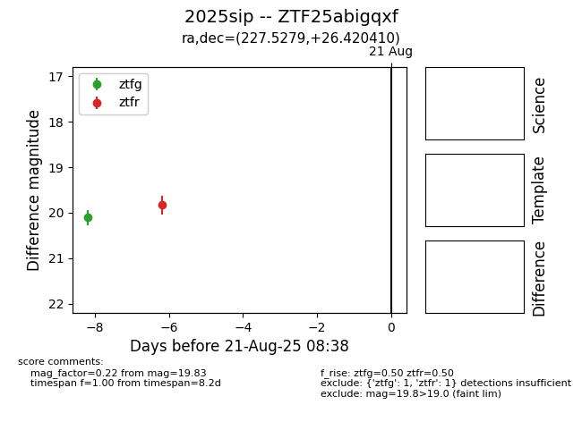

Target 2025sip at 2025-08-21 08:38, see:
FINK: fink-portal.org/ZTF25abigqxf
Lasair: lasair-ztf.lsst.ac.uk/objects/ZTF25abigqxf
ALeRCE: alerce.online/object/ZTF25abigqxf
TNS: wis-tns.org/object/2025sip
YSE: ziggy.ucolick.org/yse/transient_detail/2025sip
alt names
ZTF25abigqxf (ztf,alerce)
2025sip (tns,yse)
coordinates:
equatorial (ra, dec) = (227.5279,+26.42041)
galactic (l, b) = (39.6657,+59.13932)
photometry
last ztfg=20.11, ztfr=19.83
1 ztfg, 1 ztfr detections
